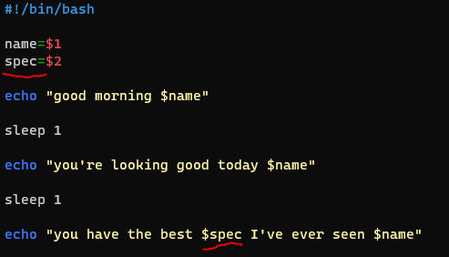

BASH
“#!/bin/bash” bu kısmı scriptin ilk satırına yazarak başlamalıyız ki hangi shell'i kullandığımızı belirtmiş olmamız gerekiyor. bash,python, go vb. gibi.
“name=$1” şeklinde belirttiğimiz kısım bu scripti çağırırken bir argüman vermemiz halinde o argümana göre bize bir şeyleri return etmesini sağlayacaktır. örneğin ./bestdayever.sh ahmet şeklinde çağırdığımızda
şeklinde, çağırdığımız argümana göre return etti.
Argüman eklemeden çağırırsak argümanın olduğu kısım boş gelecektir;

İstersek bu şekilde 2. bir argüman da ekleyebiliriz. Bunun kullanımı için ise;
bu şekilde ikinci argümanı ekleyip return edebiliriz.
Variable to Command
Bu şekilde variable (değişken) e bir command (komut) değeri verebiliriz.
if-else statement
switch-case